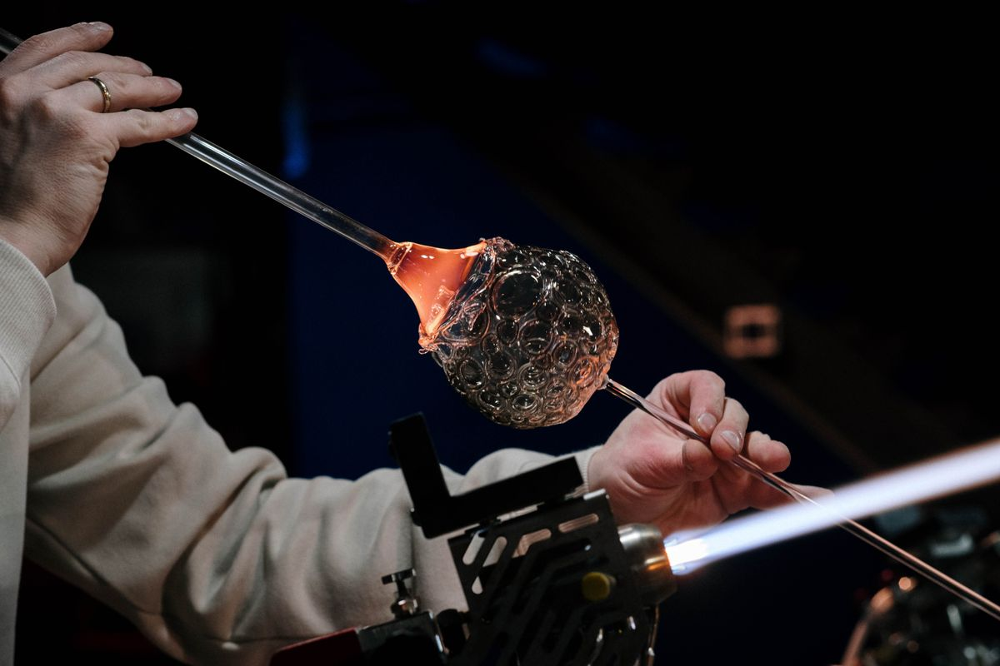
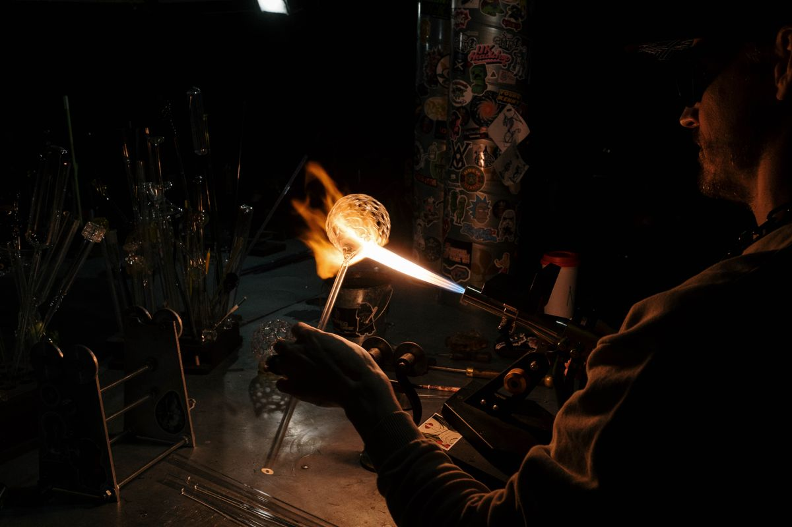
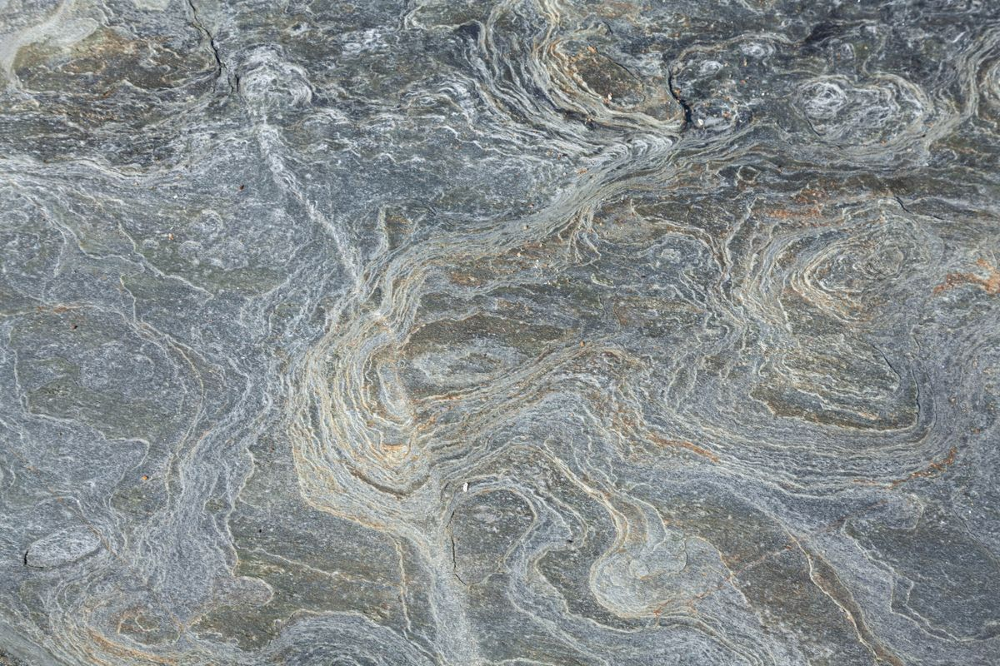

About
Sanna Reyes
I make objects out of two glasses that have almost nothing in common: a stone that a volcano made, and a glass that a factory made. The studio is in Bend, Oregon, because the first of those is here.
I came to glass sideways. Two seasons as an apprentice in a production glass studio in Seattle — sweeping, then assisting, then, in the second winter, being trusted with other people's annealers — taught me the part of this trade nobody photographs: most of glassmaking is waiting correctly. A year assisting in a kiln-casting studio in New York state taught me the rest of it: moulds, schedules, and the discipline of writing everything down.
Obsidian Breath opened in Bend in 2019, one bench, one kiln, one annealer. It is still one bench. The register on the Objects page — 118 pieces completed, 23 lost in the making — is the whole of the studio's ambition: a small number of objects, each with its paperwork in order.

Reference photograph — the torch bench, in spirit. The studio does not use photographs of the maker as decoration.
The working page
How a piece runs
1 — Material selection
Obsidian arrives as rough and is read before it is cut: flow lines, inclusions, the places where the stone is already deciding to fail. Rough that reads badly is not bought, however beautiful the surface. Borosilicate arrives as rod and tube, measured and logged like any other manufactured material.
2 — Hot work
At the torch, borosilicate is worked in a flame hot enough to make it move like honey. In the kiln, obsidian cullet is cast into a mould and held until it has taken the form completely. Hot work is the short part of the schedule — Table S1 gives it days. Everything after it takes longer.
3 — Annealing
Glass that cools unevenly stores its stress invisibly and spends it later, as a crack, in the worst available place. Annealing is the slow, controlled cooling that lets the stress out — cycles of it, counted in Table S1, and never shortened to meet a date. The planner on the Objects page refuses dates for this reason and no other.
4 — Cold work
Cutting, grinding, lapping: the unglamorous hours in the schedule's “making days” that decide whether a form looks inevitable or merely finished. Obsidian is cold-worked more than it is cast — the cast gives the mass, the cold shop gives the line.
5 — Finishing and crating
The finish is chosen before the piece is begun, because it is in the schedule: raw edge, satin, or polished, each with its days and its fee printed. Then the crate — foam-lined, fitted to the piece, built before the piece is allowed to need it.

Reference photograph.
The honesty page
Two glasses, told apart
Obsidian is a natural volcanic glass. It is rhyolitic lava that cooled too quickly to crystallise — a stone, in every way that matters, that happens to be glass. The studio's obsidian is bought as rough from a licensed collector working the Glass Buttes flows in central Oregon, and its source is stated on every caption plate as material fact. Nothing mystical is claimed for it. It is old, it is black, it takes an edge and a polish, and that is enough.
Borosilicate is a manufactured glass — silica with boron trioxide, thermal expansion 3.3 × 10⁻⁶/K, made in factories and bought by the studio as rod and tube. It is worked at the torch because that low expansion is what lets a flame shape it without tearing it apart. Nothing at the torch is volcanic, and nothing on this site calls it so. When a caption plate says obsidian, the piece is stone. When it says borosilicate, the piece is factory glass, honestly come by.

Reference photograph — obsidian's flow lines, the record of the day the lava stopped.
Fragility, and the discipline of moving glass
Glass breaks. The studio's answer is not to pretend otherwise but to price it, count it and pack against it. In the making, losses are the studio's and are counted in the register. In transit, pieces travel in fitted, foam-lined crates, double-boxed, by insured courier — and some pieces do not travel at all: anything over 50 cm, or with a wall under 4 mm, goes by specialist art courier or by collection only. A piece that cannot be packed safely will not be posted hopefully. If that loses a sale, it loses a sale.
Engagement terms
The terms, printed before you need them
- Booking. A commission is booked with a 50% deposit. The bench start is the next open start on the printed schedule, and commissions are taken in order.
- Balance. The balance falls due before crating. A piece does not enter its crate unpaid, and a crate is not opened again for paperwork.
- Breakage in the making. The studio's loss, entirely. The client is told within a day, with photographs, and the clock restarts. Case File 1 is this term, exercised.
- Breakage in transit, in the studio's crate. Replacement or a full refund — the client's choice, not the studio's.
- Breakage after delivery. Repair is quoted first, honestly, including when the honest answer is that repair is impossible. If a piece cannot be repaired, a replacement is made at half the original price within two years, from the studio's records of the piece. Case File 3 is this term, exercised.
- Crating. Charged as printed in Table F3 on the Objects page — always its own line, never folded into the price of a piece.
- Editions. Unique pieces are unique. Series are numbered as made and can be continued; the studio does not use the word “edition” to make open work sound scarce.
Enquiries
The bench is booked by letter.
Write to the studio — the schedule, the fees and the terms are already in front of you.